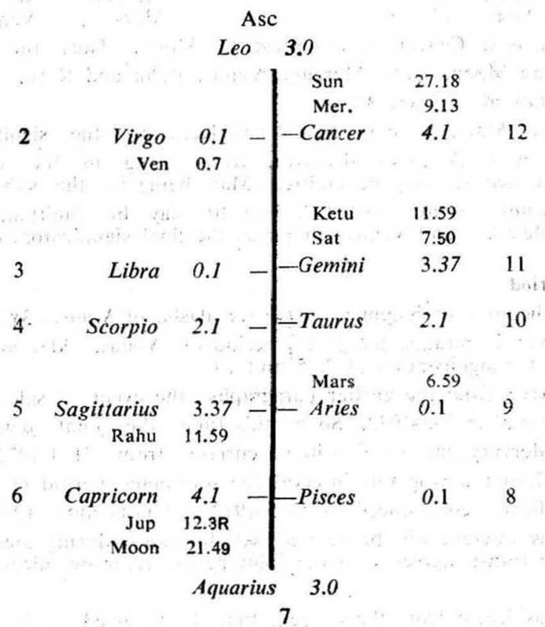
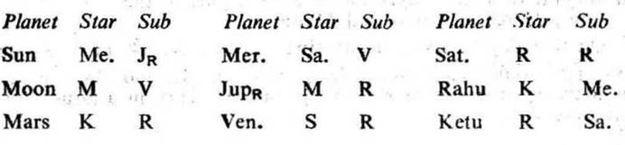
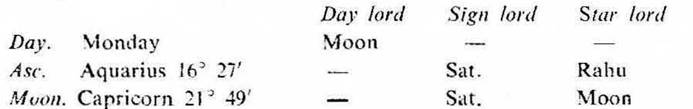

Question. When shall I get the lease licence for mines from the State Govt. ?
Number. 86 (out of 249)
Place of Judgment. 23°N 2′, 72°E 35′.
Time of Judgment. 13-8-1973, Monday; 8-10 p.m. I.S.T.


The house 6 denotes a tenant or lessee; the 12th shows parting with the possession of land or building or mines and the 11th indicates success or fulfilment of desire or gain. So for getting the lease of mines from the other person, consider the house 11 from the Asc.; and 6 and 12 as counted from the 7th (the other person's Asc).
If the cuspal sub lord of the Asc. and/or the 11th is the significator of 6, 11 or 12, you can become a lessee during the joint period of the significators of 6, 11 and 12.
In this horary map Moon is in its own star owning 12 (6th from 7 i.e. lessee) and occupying 6 (12th from 7 i.e. parting with the possession of mines by Govt.), it is aspected by the owner of 11 (Mercury). So Moon is the significator of 12, 6 and 11. Thus it indicates that the querent desires to become the lessee to Govt.
Asc. The sub lord of the Asc. is Sun, it occupies 12. It is in the star Mercury owning 11 and occupying 12; it is in the sub Jupiter in 6. So Sun is the significator of 11, 12 and connected with 6 and 12. Its sub lord Jupiter in 6 denotes parting with the possession of mines by Govt. But it is retrograde, so the lease licence from Govt. will be promised only when Jupiter becomes direct in motion i.e. after 29-9-1973.
11th cusp. The cuspal sub lord of the 11th is Venus. It is in the star Sun which is in conj. with the owner of 11 (Mercury) in the 12th. It is in the sub Rahu (being aspected represents Saturn in 11 and owning 6). So Venus is the significator of 11, 12 and connected with 11 and 6. Hence the querent will surely get the lease licence of mines from Govt.

None of them is in the star or sub of a retrograde planet. So the ruling planets are Moon, Saturn and Rahu. Saturn is in the star and sub of the ruling planet (Rahu), so Saturn gets stronger than Rahu. Moon and Saturn are the significators of 6 and 11.
At the time of judgment (Moon Dasha balance 1Y 1M 19D) the querent is running the joint period of Moon, Venus and Jupiter.
The period ruler Moon is among the ruling planets and it is the significator of 6, 11 and 12 as previously discussed.
The sub period ruler Venus is the cuspal sub lord of 11 and it is also the significator of 6, 11 and 12. as discussed earlier.
So the joint period of Moon and Venus is to be considered as favourable for getting the lease licence.
The inter period ruler Jupiter is retrograde and as discussed earlier we have to omit Jupiter. The next after Jupiter the inter period of Saturn will start from 27-8-1973 and will continue upto 2-12-1973. Saturn is among the ruling planets and it is also the significator of 6 and 11.
Hence during the joint period of Moon, Venus and Saturn the querent will get the lease licence after 29-9-1973 when the transit agrees.
Sun will transit in Virgo from 12° to 23° in the star Moon (the period ruler) from 29-9-1973 to 11-10-1973; Venus will be in Scorpio 4° to 9° in the star Saturn (the inter period ruler); and Saturn in Gemini 11° to 11°20′ in its own sub Saturn. So the querent will get the lease licence before 11-10-1973.
It was learnt from the querent that he could secure the lease licence of mines from Govt. before 11-10-1973. No exact date was mentioned in the letter by the querent.